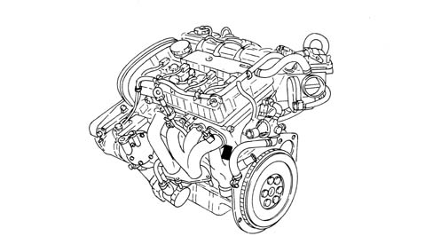
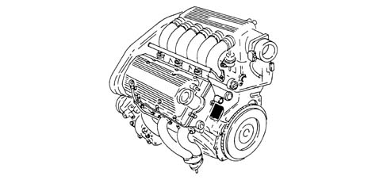

ENGINE MARKING
- Path
- Technical Data > GENERAL INFORMATION > ENGINE MARKING
- Kind
- technical data / specifications
- Applies to
- all engines; all production periods
- Interactive page
- https://sloeber94.github.io/elrnDB-aGt/en/#/125000008
Applies to: all engines; all production periods
The engine marking is stamped on the cylinder block/crankcase, gearbox side, near the exhaust manifold.
1.8 T.SPARK - 2.0 JTS Engine

3.2 V6 Engine

1.9-JTD 16v Engine